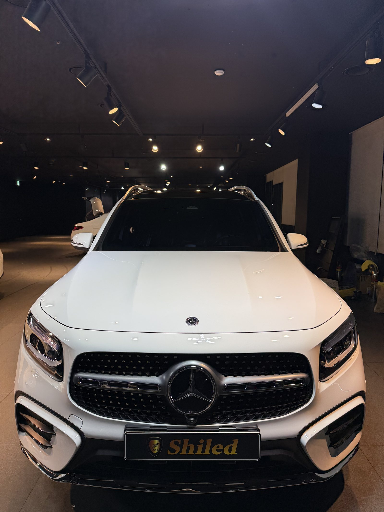
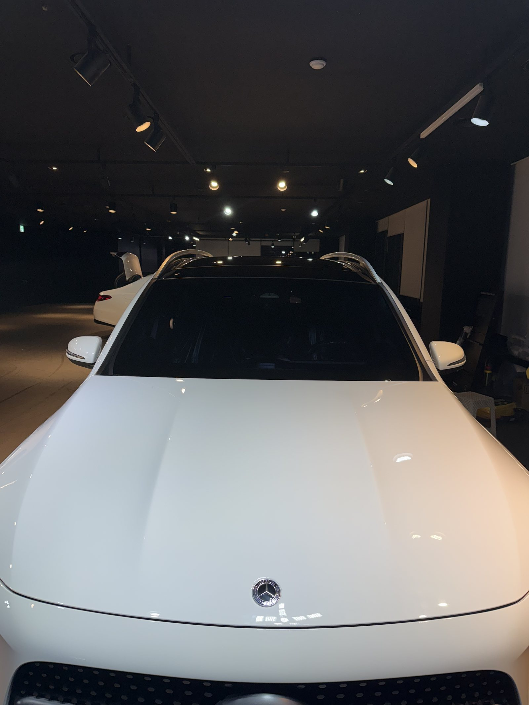
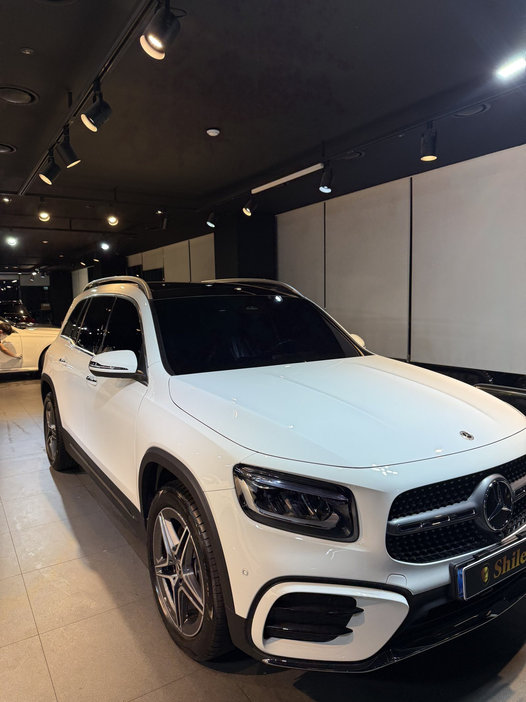
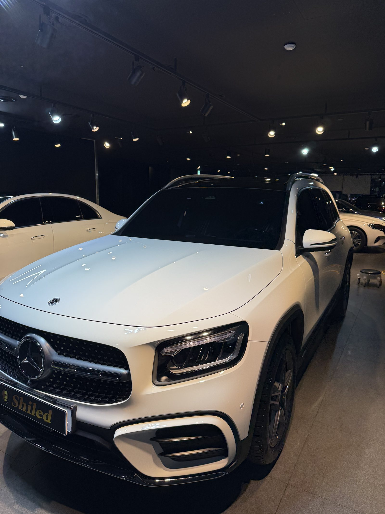
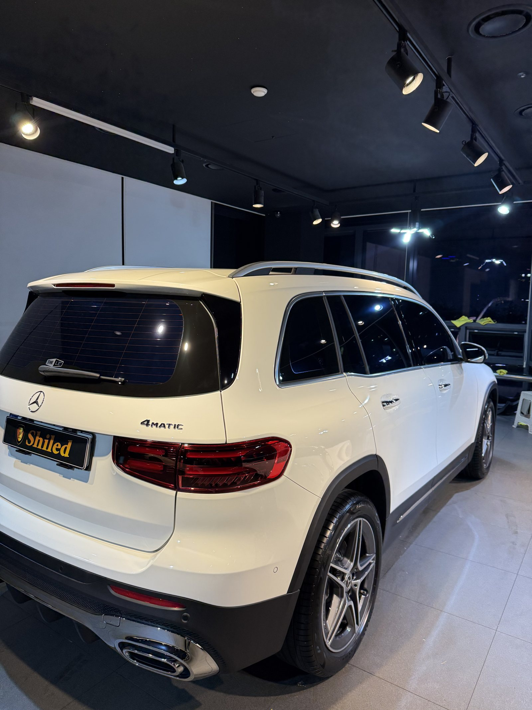
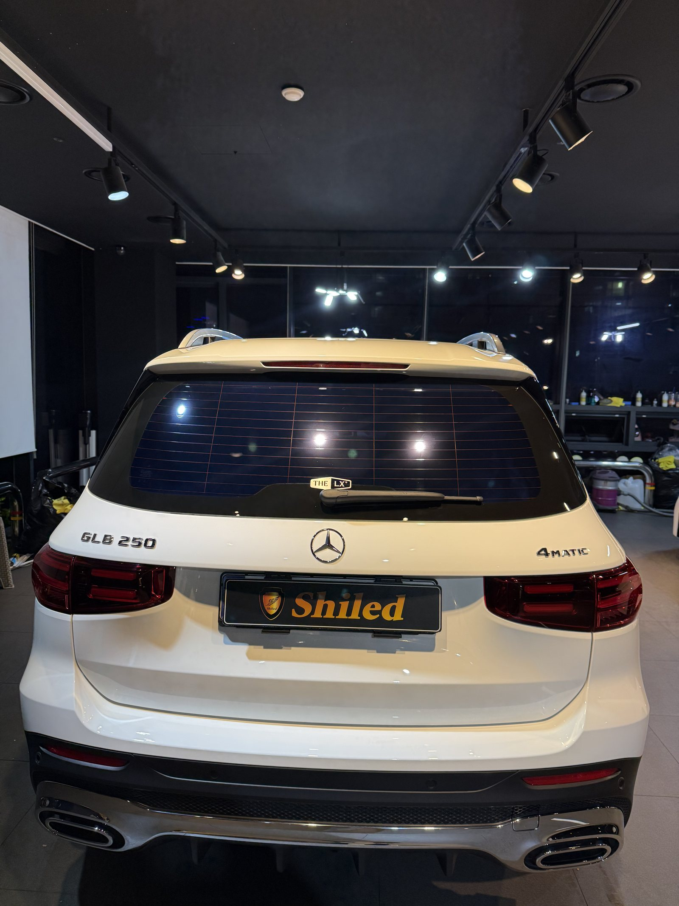
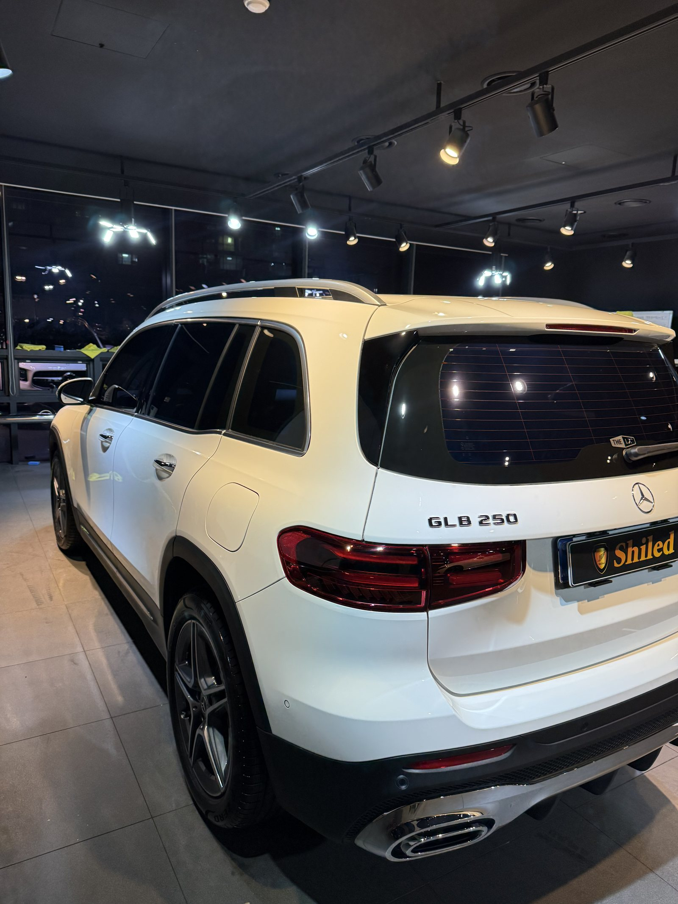
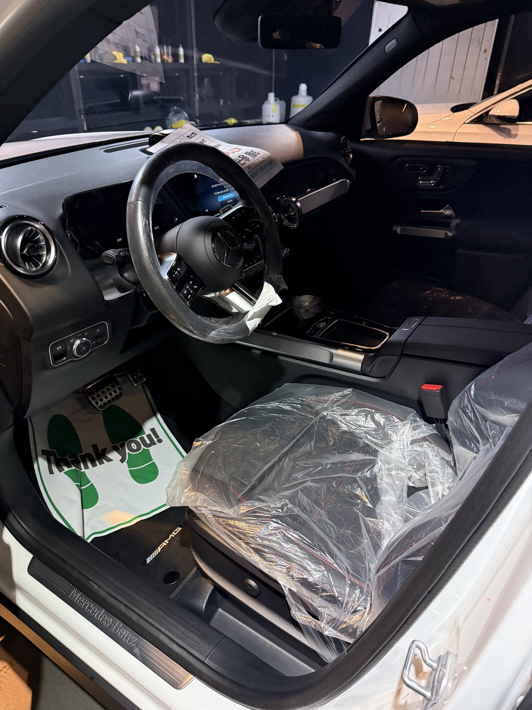
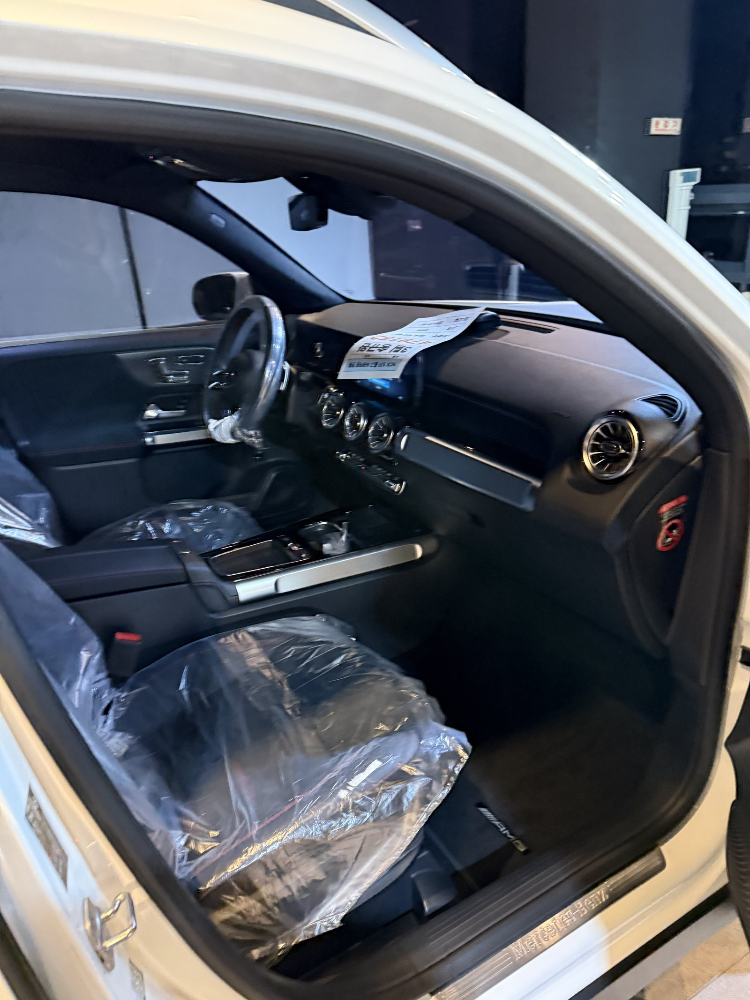
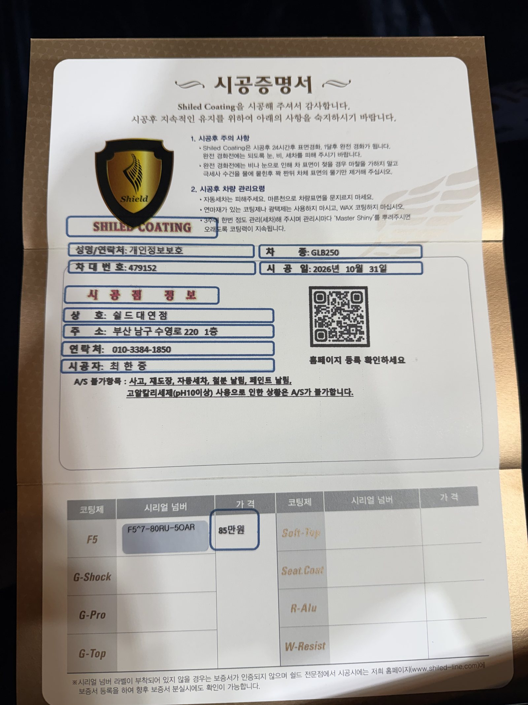

벤츠 GLB250, 백색 신차입니다.
조명을 낮춘 어두운 쇼룸에서 기록했습니다.
출고 전 F5로 진행한 부산 유리막코팅입니다.

흰 차는 왜 어두운 데서 보나요?
밝은 곳에서는 면이 다 날아가 보이기 때문입니다.
흰색은 빛을 전부 튕겨내서 밝은 조명 아래에서는 굴곡이 안 보입니다.
배경을 어둡게 하고 스팟 조명만 비추면 면의 결이 드러납니다.
덜 닦인 자리도 그때 보입니다.
그래서 흰 차는 일부러 어두운 자리에 세워두고 확인합니다.



루프레일 아래는 어떻게 했나요?
GLB는 루프 위로 레일이 길게 올라가 있습니다.
레일과 루프 사이 틈은 손이 잘 닿지 않습니다.
그냥 지나가면 코팅제가 그 안에 고여 하얗게 남습니다.
틈을 따로 닦아내고 마무리했습니다.
뒤쪽은 테일게이트와 테일램프 주변까지 확인했습니다.



기술자의 팁
흰 차는 잔기스보다 철분 오염이 먼저 눈에 띕니다. 갈색 점이 올라오기 시작하면 그냥 세차로는 안 지워집니다. 더 번지기 전에 한 번 봐주시는 게 좋습니다.
백색 GLB250에 F5를 올린 이유
F5는 색감의 깊이와 글로시함에 특화된 코팅입니다.
흰색은 깊이보다 매끈함이 더 중요한 색입니다.
표면이 매끈해지면 때가 덜 붙고 세차 때 훨씬 쉽게 떨어집니다.
실내는 블랙 시트 구성입니다.
코팅제는 대표가 직접 개발·제조한 제품입니다.
이번 부산 유리막코팅은 F5 싱글로 진행했습니다.


시공증명서도 함께 드립니다
모든 시공 차량에 시공증명서를 드립니다.
차종·시공일·코팅제 시리얼 번호가 적혀 있고, 홈페이지에 등록해 보증을 받으실 수 있습니다.

차종·시공일·코팅제 시리얼이 기재된 시공증명서
자주 묻는 질문
Q. 어두운 곳에서 흰 차를 보면 뭐가 보이나요?
A. 흰색은 밝은 곳에서 면이 다 날아가 보입니다. 어두운 배경에서 스팟 조명만 비추면 면의 굴곡과 덜 닦인 자리가 드러납니다.
Q. 루프레일 아래는 어떻게 하나요?
A. 손이 잘 닿지 않아 그냥 지나치기 쉬운 자리입니다. 레일과 루프 사이 틈은 따로 닦아내고 코팅제가 고이지 않았는지 확인합니다.
Q. 흰색 차는 어떤 오염이 제일 잘 보이나요?
A. 철분 오염과 물때입니다. 흰 바탕에 갈색 점으로 올라오기 때문에 잔기스보다 먼저 눈에 띕니다.
Q. 왜 출고 전에 코팅하나요?
A. 도장면이 가장 깨끗할 때 올린 코팅이 가장 오래갑니다. 운행과 세차로 잔기스가 생기기 전에 입혀두는 것이 핵심입니다.
Q. 쉴드광택 위치와 예약은 어떻게 하나요?
A. 부산 남구 유엔로220 1F 쉴드광택입니다. 예약·상담은 010-3384-1850, 대표 최한중이 직접 상담하고 책임 시공합니다.
새 차일수록 시작점이 다릅니다. 가장 깨끗할 때 입혀두십시오.
제품을 직접 만드는 사람이 직접 시공합니다.
부산에서 신차 유리막코팅을 고민 중이시면 편하게 연락 주십시오.
어떤 차를 타냐보다 어떻게 타냐가 중요합니다~!
시공 중에는 전화를 받지 못할 때가 많습니다.
카카오톡으로 차종과 원하시는 시공을 남겨주시면 확인 후 답변드립니다.
쉴드광택 · 부산 남구 유엔로220 1F · 대표 최한중